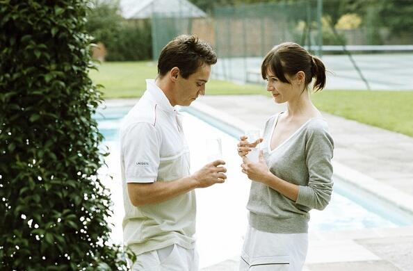

您当前的位置：
您当前的位置：
渣男的最后胜利
发布时间：2016-09-07 编辑：余斗 阅读
电影开篇就以男主角的口吻说出人生中运气的重要性，如果有人相信运气，那么他一定已经参透了人生。努力工作很重要，但我觉得每个人都害怕承认运气有多重要。这是男主角威尔顿的人生哲学，何尝不是导演伍迪艾伦要表达的人生哲学，可是余斗认为运气固然重要，而时刻的努力方能换来这些运气，不然只能是固步自封。
《赛末点Match Point 》是我接触伍迪艾伦的第一部影片，并没有从中感受到伍迪艾伦的独特电影风格，剧情片是很难吸引人的，特别是这种文艺系列，只有一个人在夜深人静的时候，无所事事才会翻出来看。看完《赛末点 》后，我有一种吞下生猪肉的感觉，久久不能消化，这是一部罕见的反派人物拥有好的结局的电影，但是人生何尝不是如此，很多事情不尽如人意，日子不还是得继续过下去。

电影的故事很简单，讲了一个穷小子威尔顿为改变自己的命运，从爱尔兰来到伦敦当起网球教练，立誓要凭一身网球绝技混入对该运动情有独钟的上流社会。结识富家公子哥汤姆后，他得到机会，对方的妹妹克罗伊对他一见钟情，其后，在对方的父亲的相助下，威尔顿顺利混入上流社会。期间威尔顿邂逅来自美国的女演员诺拉，相似经历令两人萌生真情，但威尔顿并没为诺拉放弃自己的计划。一切梦想都成真后，威尔顿重遇已与汤姆分手的诺拉，两人旧情复燃，威尔顿开始在她与妻子之间周旋，最后担心奸情败露而动杀机杀害诺拉。
影片开场，有一段网球擦网的镜头，这个球最后有没有过网，电影中没有交代，常识告诉我们，这个球如果打成，那就是一个十足的幸运球，这里也引出了影片的核心关键词“运气(Lucky)”。导演伍迪艾伦总是在有意无意的告诉我们，生活中最重要的就是运气，男主角总是有好运气，初到伦敦就能有体面的工作，工作的过程能结识上流社会的人，又能被别人给看中，成功打入上流社会，自己看上的女人，三言两语就能勾搭上，这一切都是宣告着他的运气之好，但也表现出男主渣男的形象。在他与女主第一次见面时，手拿球拍，半搂女主的时候，我们谁能预想得到这会是一个悲剧的开始呢?
电影的上半段是甜蜜的，让人向往的，女主斯嘉丽和男主乔纳森在麦田中的激情戏大概是2005年银幕上最性感的镜头了，微妙、层层渲染，吊足了每个观众的胃口后突然爆发。彼时，斯嘉丽才21岁，却性感的让每个男人都无法自拔，女神就是女神，性感是生在骨子里，表现在脸上，风情万种。但是下半段开始，画风突转，两人的人生道路朝着不同的方向发展，而渣男主角硬生生的给掰到一起，自己造下的孽，最后反而要靠杀人灭口来结束，实在是让人痛恨不已。
这大概就是我久久不能消化的原因，一个渣男怎么能这么幸运，电影不是该表现的积极向上一些嘛?哦，我说的是国内的电影。
年少的时候觉得生命非得由爱情来催生才是人道的、完美的，斯嘉丽也在电影中说了，你和你老婆没有孩子是因为你不爱她，我怀孕了是因为我们相爱，孩子就是爱情的结晶。只可惜她看错了男主角，虽然也有爱，但是金钱和物质更多的替代了爱情，这就是现实的残酷。当屏幕上打出END之后，我长吁了一口气，终于结束了，外界的审判终于结束了，而良心的审判远远未结束，幸运的男主角此刻看来却是不幸运的，人生的路还很长，路漫漫，以后他的内心都会被这个债给困扰。
由此看来，进入上流社会都是要付出代价的，不管是杀人的还是被杀的，怕是都得不到安息吧！
关键字词:渣男 上流社会